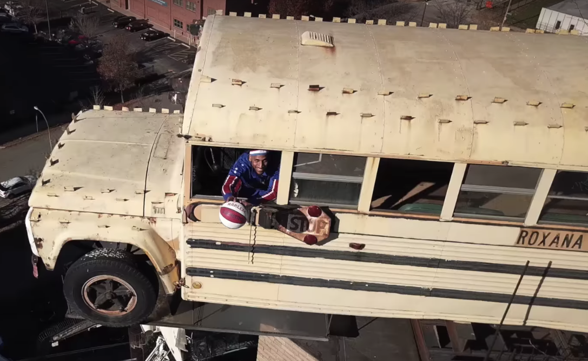

Welcome to the City Museum, part giant playground and part exhibition space for an eclectic combination of reclaimed objects found within the city’s municipal borders.
00
Quick Facts
Perched 160 feet in the air
Life-sized and formerly operational
Donated by the Roxana School District
01
Walk towards the
entrance and look up.
From the main the entrance to the museum, you may be surprised to see
a school bus jutting off of the roof. The museum's founder and internationally aclaimed artist Bob Cassilly purchased the formerly operational school bus from a salvage company. On the spur of the moment, Cassilly decided to place the bus on the museum's roof.
02
If you have time,
enter the museum.
The museum is an eclectic mixture of children’s playground, funhouse, surrealist
pavilion, and architectural marvel made out of unique, found objects housed in the 600,000 square-foot former International Shoe Company. The museum opened for visitors in 1997 to the riotous approval of young and old alike.
03
After exploring,
head up to the rooftop.
In addition to the iconic school bus, the City Museum's roof is home to a variety
of other unusual attractions including Big Eli, a restored, revived, and revolving four-story Ferris wheel that offers a one-of-a-kind view of the city and a giant Praying Mantis.
04
Finally, if you're feeling
courageous, enter the bus.
Visitors to the museum are welcomed to enter the school bus and get behind the
wheel. In the twenty years that the bus has sat atop the City Museum, people from all over have climbed aboard. Recently, the Harlem Globetrotters, an exhibition basketball team, dropped a three pointer from the front seat as part of the second annual "World Trick Shot Day."

Zeus McClurkin, one of the Globetrotters, preparing to take his shot.